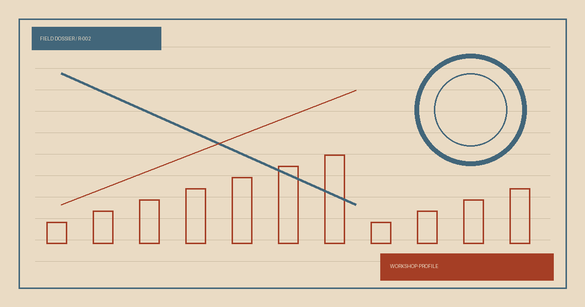

__WORKSHOP_OPENING_TITLE__
__WORKSHOP_OPENING__
NO.039__EDITION_LABEL__
FIELD DOSSIER / R-002
__WORKSHOP_DECK__

__WORKSHOP_OPENING__
__WORKSHOP_SECTION_1_BODY__
__WORKSHOP_SECTION_2_BODY__
__WORKSHOP_SECTION_3_BODY__
__WORKSHOP_SECTION_4_BODY__